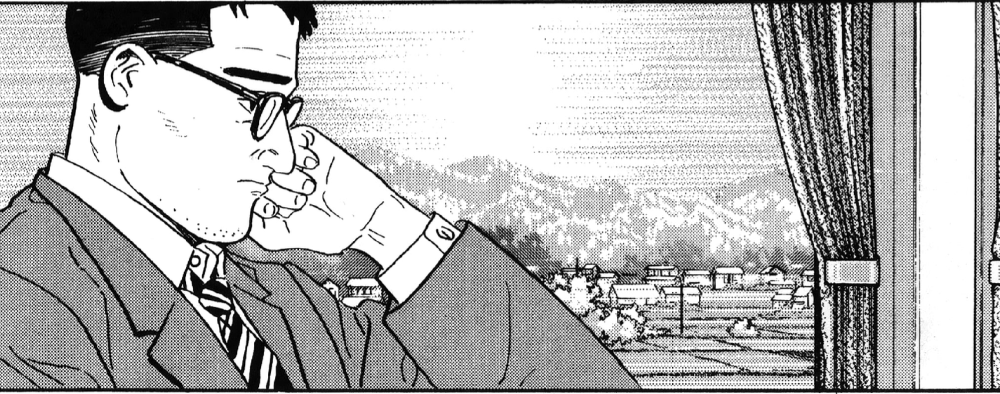
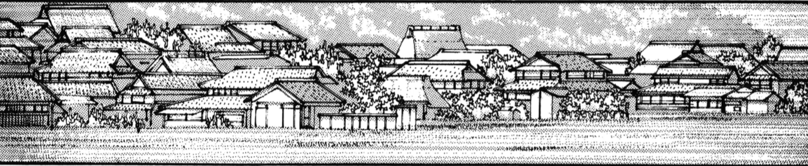

Gare de Kyôto, direction Tokyo.
9 avril 1998, 9h12 du matin.
9 avril 1998, 9h12 du matin.


Je ne me suis pas égaré, cette fois j'étais bien en route pour
Tokyo.

Je pensais à mon épouse...
Mes deux filles...
Mes deux filles...

Que pouvaient-elles bien faire
à cet instant précis ?
à cet instant précis ?


À quoi pensais-tu, au moment de rendre
ton dernier soupir ?
ton dernier soupir ?
Après la mort de maman, la maison
est restée vide un moment,
et puis nous l'avons vendue...
est restée vide un moment,
et puis nous l'avons vendue...

J’ai quitté l'endroit ?

Non... Je m'en suis enfui.

Aujourd’hui ne suis-je pas pareil ?

Ce quartier autrefois familier, je l'avais cru lointain,
à jamais enfoui dans ma mémoire.
à jamais enfoui dans ma mémoire.

Le temps semblait suspendu...


Le ciel est si mystérieux...
C'est comme s'il était immuable,
au-dessus des hommes,
au-delà du temps...